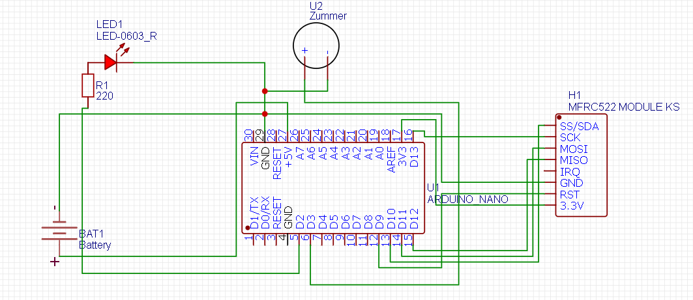

Умный замок
Для создания умного замка понадобится:
- Arduino nano
- Rfid mfrc522
- батарейка питания
- Светодиод(по желанию)
- Зуммер(по желанию)
Принцип работы
Mfrc522 - это по сути своей приемник rfid и HFC меток. Он может работать по протоколам SPI, UART, I2C. У каждой метки есть свой уникальный номер(UID). Таким образом мы можем считывать его и использовать карту как ключ. В своем проектое я использую протокол SPI
Схема подключения:
Прогромирование
Для прогромирования mfrc522 нужно скачать и установить библиотеку, иначе мы не сможем ничего сделать.
Чтобы устройство понимало когда поднесенна нужная карта надо узнать её UID и при считывании новой карты надо сравнивать её UID с правильным
Код с пояснениями:
#include <SPI.h>
#include <MFRC522.h>
#define RST_PIN 9 // Пин rfid модуля RST
#define SS_PIN 10 // Пин rfid модуля SS
MFRC522 rfid(SS_PIN, RST_PIN); // Объект rfid модуля
MFRC522::MIFARE_Key key; // Объект ключа
MFRC522::StatusCode status; // Объект статуса
void setup() {
Serial.begin(9600); // Инициализация Serial
SPI.begin(); // Инициализация SPI
rfid.PCD_Init(); // Инициализация модуля
rfid.PCD_SetAntennaGain(rfid.RxGain_max); // Установка усиления антенны
rfid.PCD_AntennaOff(); // Перезагружаем антенну
rfid.PCD_AntennaOn(); // Включаем антенну
for (byte i = 0; i < 6; i++) { // Наполняем ключ
key.keyByte[i] = 0xFF; // Ключ по умолчанию 0xFFFFFFFFFFFF
}
pinMode(2, OUTPUT);//светодиод
pinMode(3, OUTPUT);//зуммер
}
byte trueKey[4]={0xXX, 0xXX, 0xXX, 0xXX};//правильный ключ
void loop() {
// Занимаемся чем угодно
static uint32_t rebootTimer = millis(); // Важный костыль против зависания модуля!
if (millis() - rebootTimer >= 1000) { // Таймер с периодом 1000 мс
rebootTimer = millis(); // Обновляем таймер
digitalWrite(RST_PIN, HIGH); // Сбрасываем модуль
delayMicroseconds(2); // Ждем 2 мкс
digitalWrite(RST_PIN, LOW); // Отпускаем сброс
rfid.PCD_Init(); // Инициализируем заного
}
if (!rfid.PICC_IsNewCardPresent()) return; // Если новая метка не поднесена - вернуться в начало loop
if (!rfid.PICC_ReadCardSerial()) return; // Если метка не читается - вернуться в начало loop
int key=1;//вспомогательныя переменная
byte uid=1;//вспомогательная переменная
for (int i =0;i<=3; i++){//цикл на 4 шага
uid=rfid.uid.uidByte[i];
if(trueKey[i]!=uid){//проверяем прочитанный UID справильным по байтам
key=0;
if key==1{//если прочитанный UID совпал с правильным
digitalWrite(2,1);//включаем светодиод
tone(3,890);//включаем зуммер
delay(1000);//пауза 1 секунда
noTone(3);//выключаем зуммер
digitalWrite(2,0);//выключаем светодиод
}
else{////если прочитанный UID не совпал с правильным
tone(3,100);//включаем зуммер
delay(1000);//пауза 1 секунда
noTone(3);//выключаем зуммер
}
Serial.print("UID: ");
for (uint8_t i = 0; i < 4; i++) { // Цикл на 4 итерации
Serial.print("0x"); // В формате HEX
Serial.print(rfid.uid.uidByte[i], HEX); // Выводим UID по байтам
Serial.print(", ");
}
Serial.println("");
}
}
}